UD5 Análisis de Datos y Ciberseguridad
Índice
Introducción y Contexto Histórico
El origen del Big Data se remonta a los años 60 y 70, con los primeros experimentos informáticos y el nacimiento de los centros de datos. Aunque entonces no se utilizaba el término, estas bases de datos primigenias fueron los cimientos de la tecnología actual. Sin embargo, el punto de inflexión se sitúa en 2005, año del "gran salto" tecnológico impulsado por la creación masiva de contenido por parte de usuarios en plataformas como Facebook y YouTube.
Este hito fue posible gracias a la democratización de herramientas de código abierto como Hadoop, que permitió gestionar volúmenes de datos masivos, y las bases de datos NoSQL, que ofrecieron la flexibilidad necesaria para tratar datos que no encajaban en tablas tradicionales. Posteriormente, tecnologías como Spark hicieron que el tratamiento de datos fuera más rápido y económico. Hoy, esta explosión de datos continúa acelerándose gracias al Internet de las Cosas (IoT), el Aprendizaje Automático (Machine Learning) y la Computación en la Nube, que aporta la escalabilidad necesaria para procesar información a nivel global.
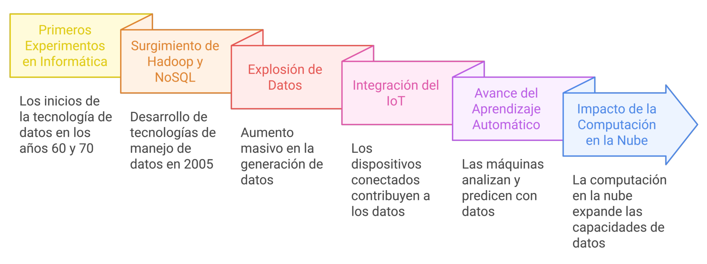
¿Qué es el Big Data? Sus Características (Las Seis V)
El Big Data se define como el conjunto de técnicas y tecnologías diseñadas para gestionar y analizar volúmenes de datos tan masivos y complejos que las herramientas de procesamiento tradicionales resultan insuficientes. Para entender su naturaleza, analizamos las denominadas "Seis V":
- Volumen: Cantidades ingentes de datos generados cada segundo por sensores, transacciones y redes sociales.
- Velocidad: La rapidez con la que se generan y deben procesarse los datos, llegando en muchos casos al tiempo real (como en la detección instantánea de fraudes bancarios).
- Variedad: La convivencia de datos estructurados, semiestructurados y no estructurados (imágenes, audios, texto libre).
- Veracidad: La necesidad de asegurar que los datos sean confiables y estén libres de errores o duplicados.
- Variabilidad: El cambio constante en el formato, calidad o frecuencia de los datos (ej. datos meteorológicos).
- Valor: El objetivo último; transformar el dato en información que permita entender la realidad o tomar decisiones estratégicas.
A estas se suman la Agregación (combinar fuentes dispares como compras y RRSS para obtener una visión completa) y la Complejidad inherente a gestionar múltiples formatos y velocidades simultáneamente.

Dato vs. Información
En el entorno del Big Data, es vital no confundir la materia prima con el producto final. El dato es una representación simbólica cruda (un número, una palabra o una imagen) que por sí sola carece de utilidad. Por ejemplo, el número "27" o la palabra "tecnología" son datos sin contexto.
La información surge cuando esos datos se procesan, organizan y cobran sentido. Un ejemplo claro es tomar miles de registros de temperatura (datos) y procesarlos para obtener un análisis climático útil (información). En resumen: los datos son la materia prima y la información es el producto final que permite a las organizaciones tomar decisiones informadas.
| Característica | Dato | Información |
|---|---|---|
| Definición | Hecho o entidad simbólica. | Datos procesados y contextualizados. |
| Naturaleza | Crudo, sin procesar. | Organizado y con significado. |
| Ejemplo | "27", "tecnología". | Análisis de tendencias climáticas. |
| Utilidad | Punto de partida. | Producto final para la decisión. |
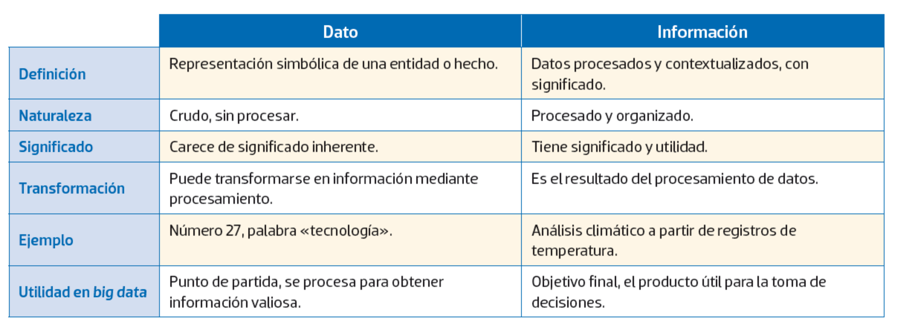
El Ciclo de Vida del Dato
Transformar un dato en valor estratégico requiere seguir un ciclo de vida iterativo y continuo:
- Generación: Identificación de qué datos necesitamos y de dónde vendrán (ej. reseñas de una tienda online).
- Captura y Almacenamiento: Recolección mediante sistemas NoSQL, Hadoop o servicios en la nube.
- Procesamiento: Fase donde nace la ciencia de datos; se limpia, organiza y transforma el dato bruto.
- Análisis y Exploración: Búsqueda de patrones e insights mediante herramientas visuales como gráficos y dashboards.
- Interpretación y Toma de Decisiones: Aplicar los hallazgos a la estrategia (ej. rebajar un producto con malas reseñas).
- Implementación y Monitorización: Aplicar los cambios, documentarlos y observar el impacto real para volver a empezar el ciclo si es necesario.
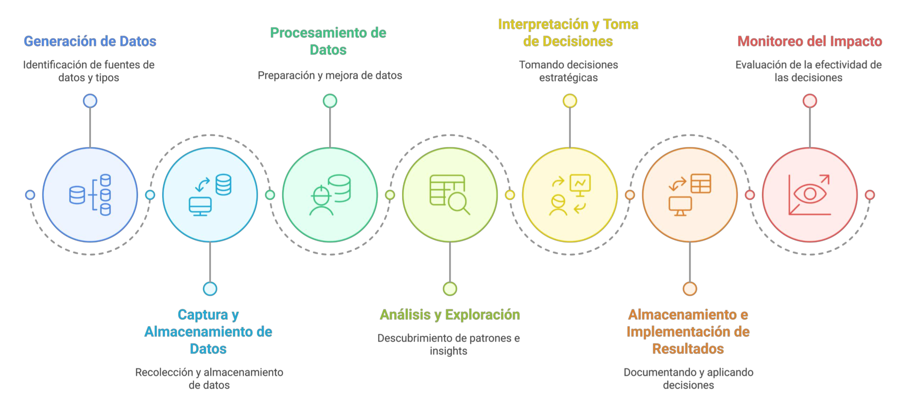
Ciencia de Datos (Data Science)
Esta disciplina utiliza estadística, programación y modelos predictivos para extraer valor. Su proceso es riguroso y comprende varias etapas técnicas:
- Comprensión del negocio: Definir el problema y qué queremos predecir (ej. variables que afectan al precio de un piso).
- Minería y Limpieza: Recopilar datos de diversas fuentes y eliminar errores, duplicados o valores anómalos.
- Ingeniería de características: Seleccionar las variables más relevantes y crear nuevas para mejorar los modelos.
- Modelado predictivo: Entrenar algoritmos de Machine Learning (como árboles de decisión) para encontrar el que mejor prediga los resultados.
- Visualización: Comunicar los hallazgos mediante informes interactivos que faciliten la comprensión de los resultados por parte de los interesados.
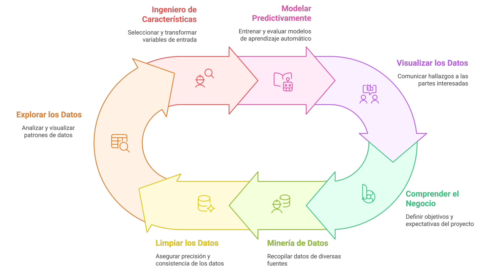
Análisis de Datos (Data Analytics)
Mientras que la ciencia de datos mira al futuro (predicción), el análisis de datos se centra en la descripción y comprensión del presente y pasado para facilitar decisiones inmediatas. Sus fases incluyen:
- Comprensión del problema: Definir metas claras (ej. ¿cómo mejorar las recomendaciones de productos?).
- Preparación de datos: Formatear y combinar diferentes conjuntos de datos (ej. historial de compras y navegación web).
- Análisis y Modelado: Aplicar metodologías específicas, como algoritmos de recomendación que relacionen perfiles de usuarios similares.
- Validación y Presentación: Comprobar si el modelo funciona (si las recomendaciones generan ventas reales) y presentar las conclusiones visualmente.
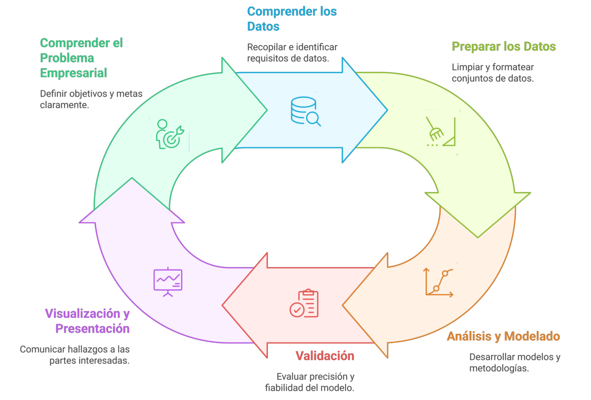
Almacenamiento por Niveles
Para que el Big Data sea económicamente viable, las empresas clasifican sus datos según su valor y frecuencia de acceso:
- Nivel Crítico (Hot): Datos esenciales de uso diario que requieren respuestas en tiempo real (transacciones actuales). Se almacenan en soportes ultra rápidos como discos SSD o memoria RAM.
- Nivel Templado (Warm): Datos importantes consultados periódicamente (informes mensuales). Se usan discos duros tradicionales, buscando un equilibrio entre coste y accesibilidad.
- Nivel Frío (Cold): Datos históricos o legales que rara vez se consultan. Se guardan en soportes de muy bajo coste, como cintas magnéticas o servicios de nube fría, aunque el acceso sea más lento.
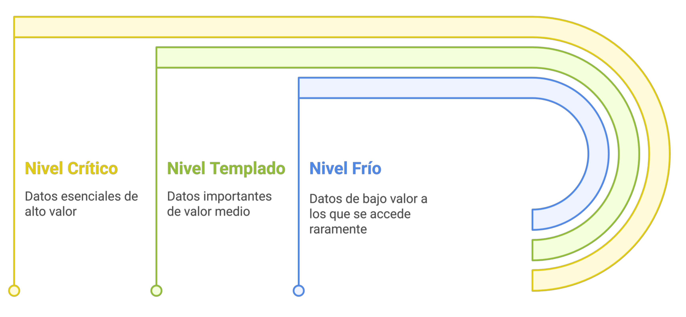
Aplicaciones del Big Data en la Empresa
El Big Data es una herramienta transversal que ha transformado todos los sectores productivos:
- Clientes y Marketing: Recomendaciones personalizadas (Netflix/Amazon) y segmentación de publicidad digital.
- Operaciones y Logística: Previsión de demanda para reducir desperdicios (ej. supermercados) y optimización de rutas de reparto en tiempo real.
- Finanzas: Detección de fraudes en transacciones online y análisis de riesgos para préstamos.
- Salud: Gestión de historiales electrónicos, investigación genómica y creación de tratamientos personalizados.
- Recursos Humanos: Análisis del desempeño y modelos predictivos para evitar la fuga de talento (rotación).
- IoT y Sostenibilidad: Ciudades inteligentes que gestionan el tráfico y agricultura inteligente que optimiza el uso de agua mediante sensores.
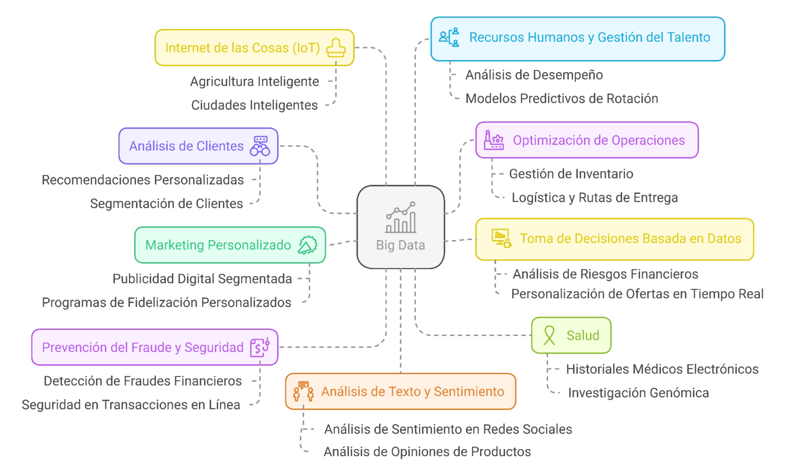
Conclusiones - Análisis de Datos
Ideas principales a recordar
- El Big Data convierte volúmenes de datos antes "invisibles" en herramientas de decisión.
- La Ciencia y el Análisis de Datos son los motores que transforman la materia prima en conocimiento.
- El almacenamiento eficiente por niveles es fundamental para optimizar los recursos económicos.
- Ya no es solo para gigantes tecnológicos; cualquier organización puede usarlo para innovar y anticiparse a los cambios del mercado.
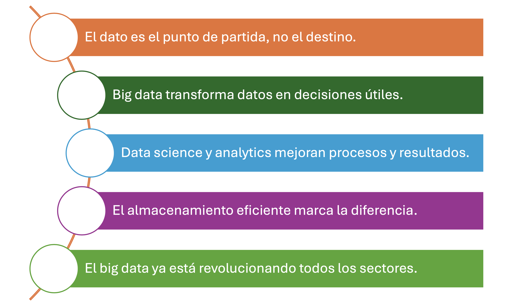
La Información como Activo Fundamental
La información es el motor que permite el funcionamiento diario de cualquier organización. Está presente en todos los procesos, desde la contabilidad y las compras hasta la estrategia de ventas o la gestión de recursos humanos. En la era digital, la información no es solo un registro, sino un activo estratégico que puede proporcionar una ventaja competitiva si se gestiona y protege adecuadamente.
Los activos de una empresa se dividen principalmente en dos categorías:
- Activos Tangibles: Son los dispositivos físicos y la tecnología que almacenan, procesan y transmiten los datos, como servidores, ordenadores y dispositivos móviles.
- Activos Intangibles: Incluyen elementos no físicos de enorme valor, como el conocimiento acumulado (know-how), la propiedad intelectual y la reputación de la marca.
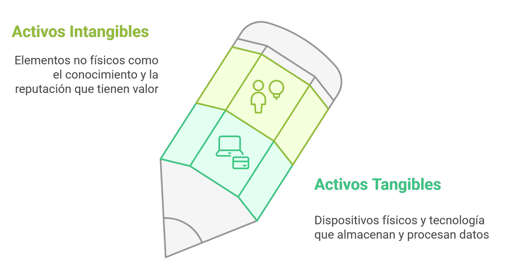
Pilares de la Seguridad de la Información
Para garantizar una protección integral, la seguridad de la información se asienta sobre tres principios fundamentales, conocidos como la "Tríada CIA":
- Confidencialidad: Garantiza que la información solo sea accesible para las personas o sistemas autorizados. Se implementa mediante controles de acceso, autenticación robusta y técnicas de cifrado.
- Integridad: Asegura que los datos se mantengan exactos, completos y que no hayan sido modificados de forma malintencionada o accidental. Se protege mediante firmas digitales, algoritmos hash y sistemas de control de versiones.
- Disponibilidad: Garantiza que los sistemas y la información estén siempre accesibles para quienes los necesiten en el momento preciso. Esto se logra con redundancia de hardware, planes de recuperación ante desastres y copias de seguridad.
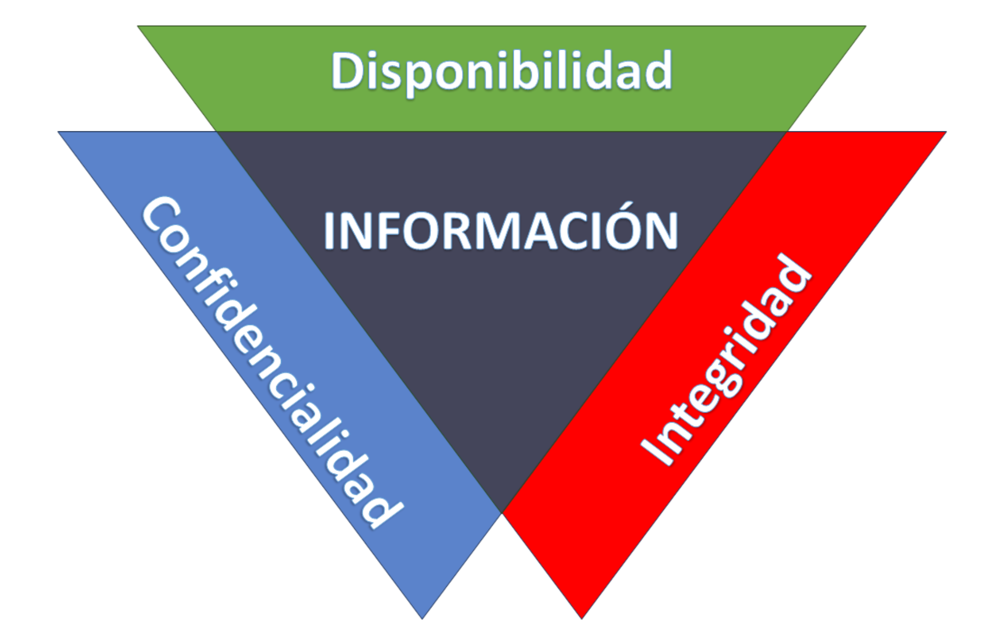
Privacidad de los Datos y Marco Legal
La protección de datos personales es una obligación legal y ética. En el contexto europeo y español, el marco normativo es especialmente estricto:
- RGPD (Reglamento General de Protección de Datos): De aplicación en toda la Unión Europea desde 2018. Introduce conceptos como el consentimiento explícito, la notificación obligatoria de brechas de seguridad en menos de 72 horas y la figura del Delegado de Protección de Datos (DPD).
- LOPDGDD: Es la ley española que adapta el RGPD a nuestra legislación nacional. Incluye la garantía de los derechos digitales, especialmente relevantes en el ámbito del teletrabajo y la desconexión laboral.
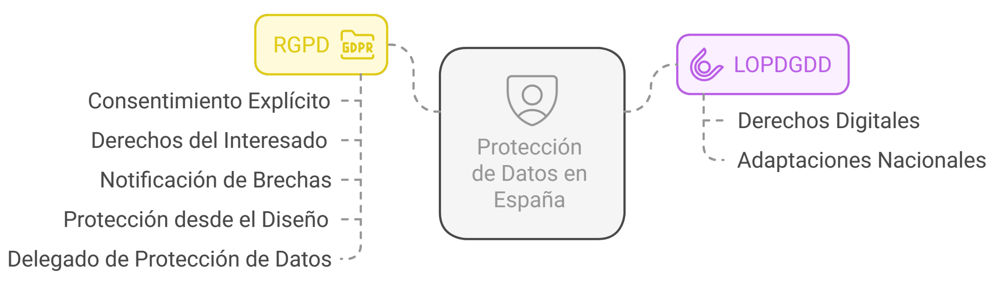
Clasificación de la Información
No toda la información tiene el mismo valor ni requiere el mismo nivel de protección. Un proceso correcto de clasificación permite optimizar recursos aplicando medidas proporcionales al riesgo:
- Identificación: Inventariar todos los activos de información de la entidad.
- Definición de Criterios: Establecer qué hace que una información sea sensible (valor económico, impacto reputacional, datos personales).
- Categorización: Clasificar en niveles, habitualmente: Pública (sin restricciones), Interna (uso diario de empleados), Confidencial (datos sensibles) y Secreta (crítica para la supervivencia de la empresa).
- Implementación y Revisión: Aplicar protecciones físicas y lógicas según el nivel y revisar la clasificación periódicamente para adaptarse a nuevos cambios normativos o de negocio.
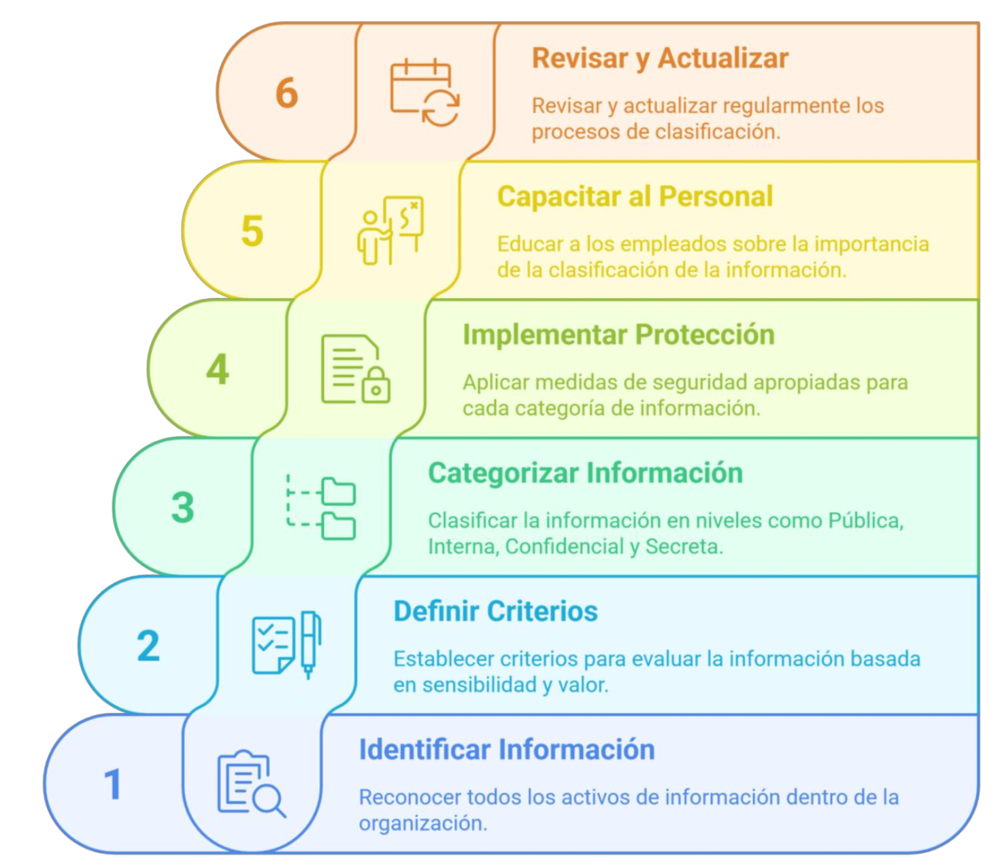
Cifrado de la Información
El cifrado es la técnica que convierte datos legibles en un formato incomprensible (criptograma) mediante una clave. Es la barrera definitiva para garantizar la confidencialidad, incluso si los datos son robados. Un cifrado seguro depende de:
- Algoritmos robustos: Uso de estándares como AES256.
- Gestión de claves: Las claves deben ser largas, complejas, generadas aleatoriamente y almacenadas en lugares seguros, contando siempre con protocolos de recuperación.
- Actualización: El software de cifrado debe mantenerse al día para corregir vulnerabilidades en los algoritmos antiguos.
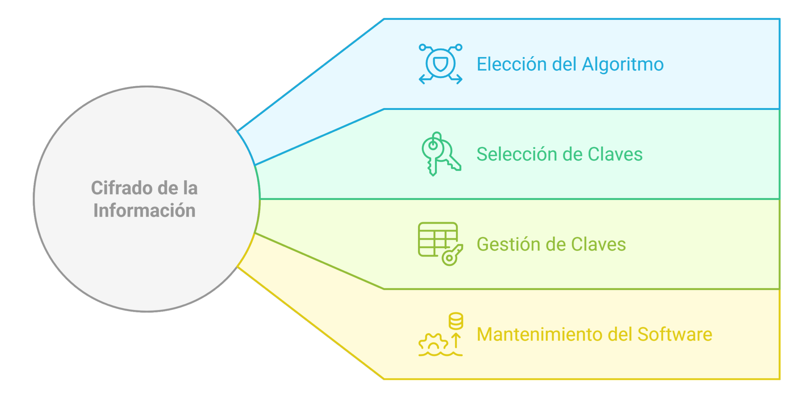
Copias de Seguridad (Backups)
Las copias de seguridad son la última línea de defensa ante errores humanos, fallos técnicos o ataques de ransomware. Para una estrategia eficaz, se recomienda seguir la Regla 3-2-1:
- Tener al menos 3 copias de los datos.
- Almacenadas en 2 soportes diferentes (ej. disco duro y nube).
- Con al menos 1 copia fuera de la ubicación física de la empresa (off-site).
Es fundamental definir el RPO (Punto de Recuperación Objetivo), que determina cuánta información estamos dispuestos a perder (frecuencia de la copia), y elegir el tipo adecuado: completa, incremental (solo cambios desde la última copia) o diferencial (cambios desde la última copia completa).
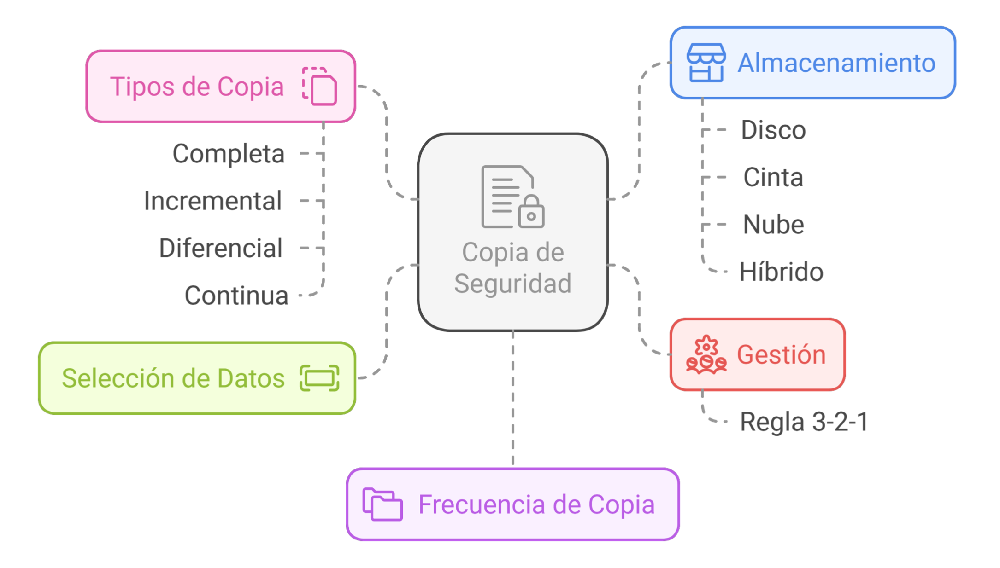
Borrado Seguro de la Información
Eliminar un archivo arrastrándolo a la papelera no lo borra del soporte físico; solo marca ese espacio como "disponible". Para evitar que información sensible sea recuperada, las empresas deben aplicar un borrado seguro:
- Software especializado: Herramientas que sobrescriben los datos varias veces siguiendo estándares internacionales.
- Destrucción física: Para soportes dañados o antiguos, es necesario el uso de servicios profesionales de trituración.
- Procedimientos en la nube: Seguir estrictamente los protocolos de eliminación de datos de los proveedores de servicios cloud.
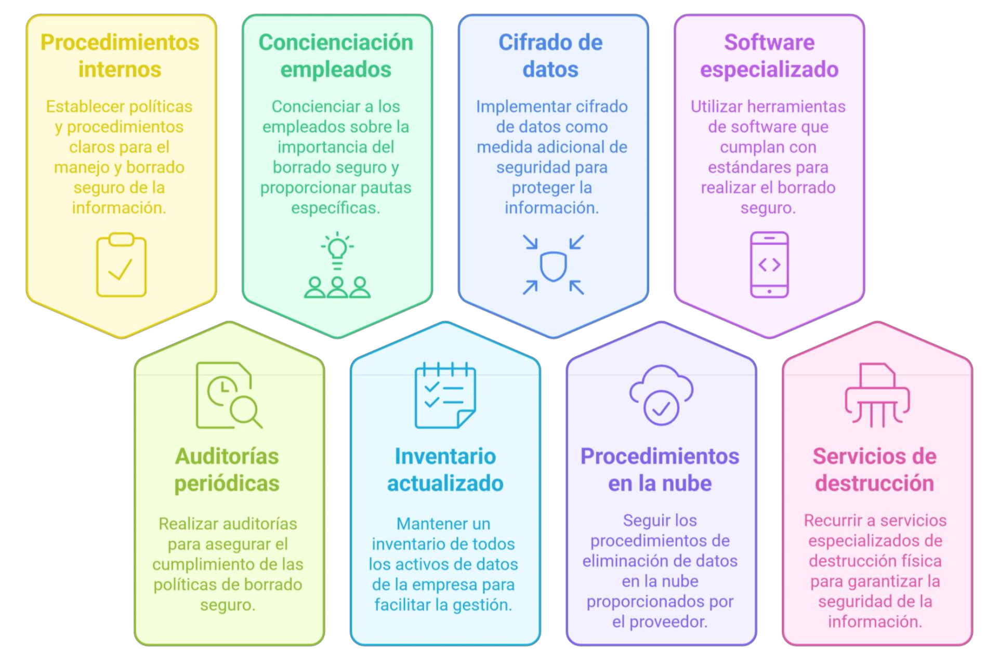
Amenazas Comunes: Phishing
El phishing es un ataque basado en la ingeniería social donde el atacante suplanta una identidad legítima para robar credenciales o instalar malware. Existen variantes específicas:
- Spear Phishing: Ataques altamente personalizados dirigidos a una persona concreta.
- Smishing y Vishing: Phishing a través de mensajes SMS o llamadas telefónicas.
- Whaling: Ataques dirigidos a la alta dirección (CEOs, directivos).
- Prevención: La mejor defensa es la formación del usuario, la verificación de certificados HTTPS y el uso de la autenticación multifactor (MFA).
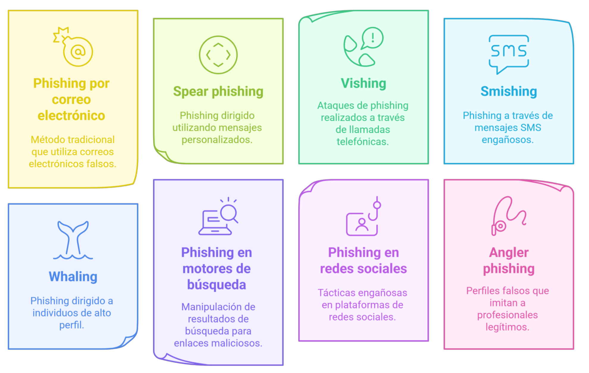
Prevención del Phishing
La prevención del phishing requiere una estrategia combinada que comienza con la formación regular del usuario sobre las tácticas de engaño más comunes.
Es necesario animar a los usuarios a verificar siempre la identidad del remitente de los correos electrónicos antes de realizar cualquier acción.
El uso de filtros anti-phishing técnicos ayuda a bloquear automáticamente los correos maliciosos antes de que lleguen a la bandeja de entrada.
También se debe enseñar a los usuarios a verificar la legitimidad de los sitios web, comprobando el protocolo HTTPS, el dominio correcto y el certificado de seguridad.
Finalmente, la implementación de la autenticación de dos factores (2FA) añade una capa de seguridad esencial que dificulta el acceso no autorizado.

Amenazas Comunes: Malware
El malware engloba cualquier programa diseñado para dañar o espiar sistemas. Los tipos más comunes son:
- Virus y Gusanos: Los virus necesitan un archivo anfitrión para propagarse; los gusanos lo hacen de forma autónoma por la red.
- Troyanos: Se camuflan como programas útiles para abrir "puertas traseras" en el sistema.
- Ransomware: Es la amenaza más grave actualmente; cifra los archivos de la empresa y exige un rescate económico (normalmente en criptomonedas) para devolver el acceso.
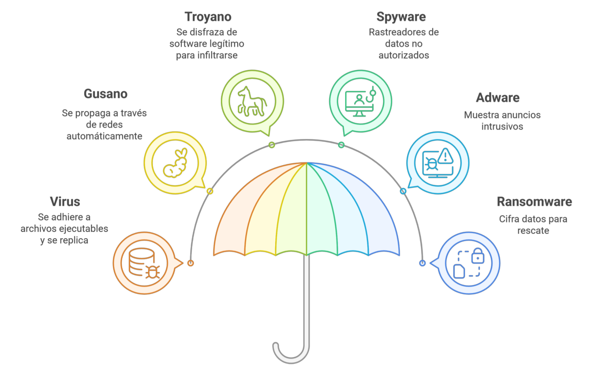
Gestión de Contraseñas
A pesar de los avances tecnológicos, la contraseña sigue siendo el método de identificación más común, pero a menudo constituye el eslabón más débil de la seguridad. Para que una contraseña sea efectiva, debe cumplir con cinco criterios fundamentales.
En primer lugar, debe ser compleja, lo que implica utilizar al menos ocho caracteres combinando letras mayúsculas, minúsculas, números y caracteres especiales.
En segundo lugar, debe ser diferente para cada servicio, asegurando que cada plataforma cuente con su propia clave única para evitar accesos en cadena.
En tercer lugar, debe ser aséptica, evitando el uso de información personal en su diseño como fechas de nacimiento o nombres.
En cuarto lugar, la contraseña es intransferible, por lo que no debe cederse a ninguna persona bajo ninguna circunstancia.
Finalmente, debe mantenerse a buen recaudo, lo que significa no dejarla anotada en papeles a la vista y utilizar gestores de contraseñas seguros para su almacenamiento.
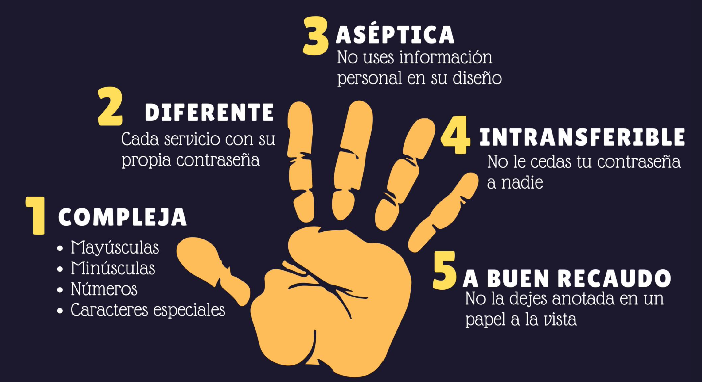
Autenticación Multifactor (MFA)
La autenticación multifactor añade capas extra de seguridad al requerir algo más que la simple contraseña para acceder a un sistema.
La autenticación de dos factores (2FA) combina algo que conoces (contraseña) con algo que tienes, como un código en el móvil o una llave física.
El nivel de tres factores (3FA) añade biometría, como la huella dactilar o el reconocimiento facial (algo que eres).
En entornos de alta sensibilidad se utiliza la autenticación de cuatro factores (4FA), que suma información sobre la ubicación desde donde se realiza el acceso. Este sistema refuerza notablemente la seguridad al dificultar los accesos no autorizados.
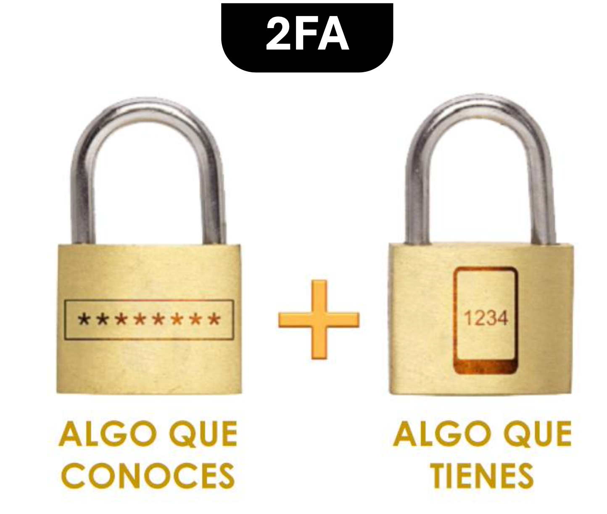
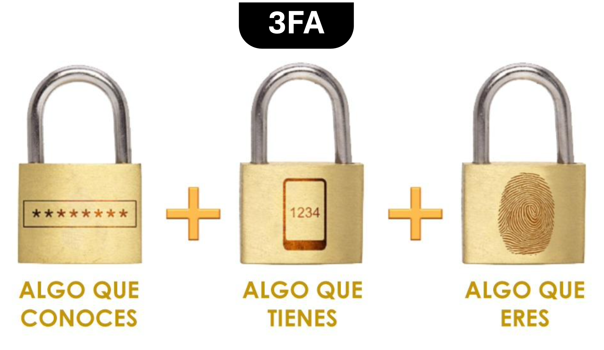
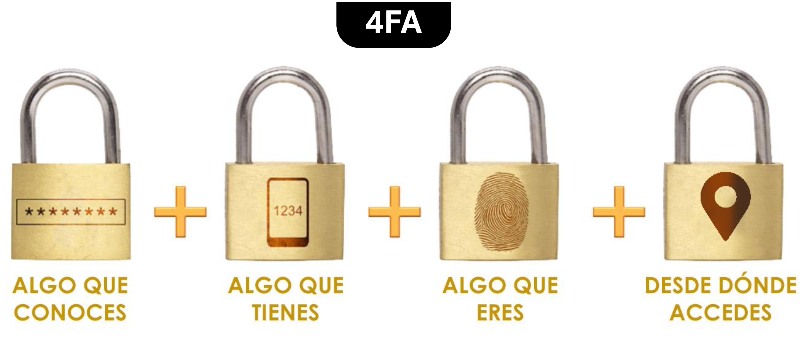
Protección del Puesto de Trabajo
El entorno físico y digital donde trabaja el empleado debe estar blindado:
- Política de mesas limpias: No dejar documentos con datos sensibles ni contraseñas a la vista.
- Bloqueo de sesión: Configurar el bloqueo automático tras pocos minutos de inactividad.
- Actualizaciones: Mantener el sistema operativo y todas las aplicaciones actualizadas para cerrar brechas de seguridad (parches).
- BYOD y Teletrabajo: Si se usan dispositivos personales, deben seguir las políticas de seguridad de la empresa y conectar siempre a través de redes VPN seguras.
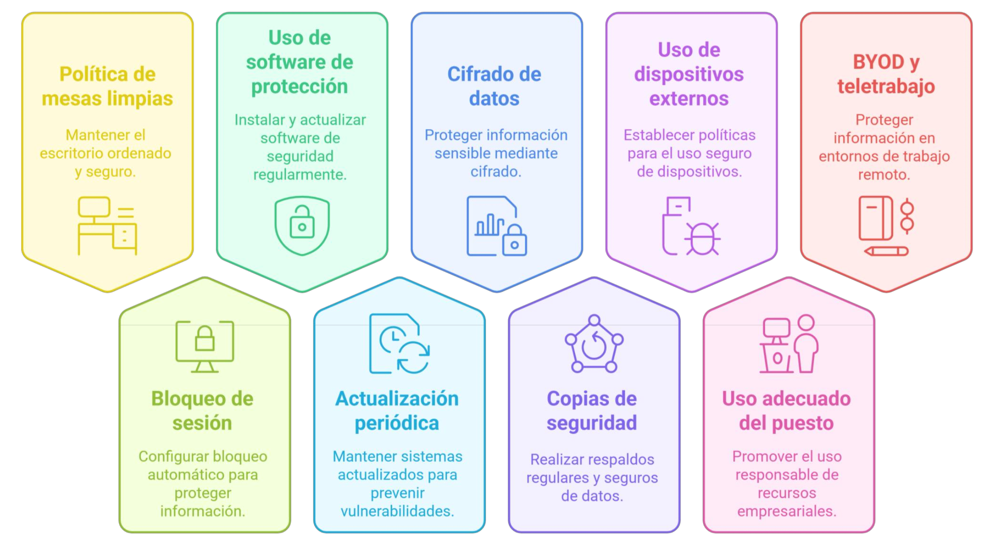
Conclusiones - Ciberseguridad
Ideas principales a recordar
- La seguridad no es solo técnica, depende enormemente del factor humano.
- La prevención (formación, contraseñas, cortafuegos) es siempre más barata y efectiva que la respuesta tras un ataque.
- La información es el activo más valioso; su pérdida puede suponer el cierre de una empresa.
- La ciberseguridad debe ser un proceso continuo de evaluación, protección y mejora.
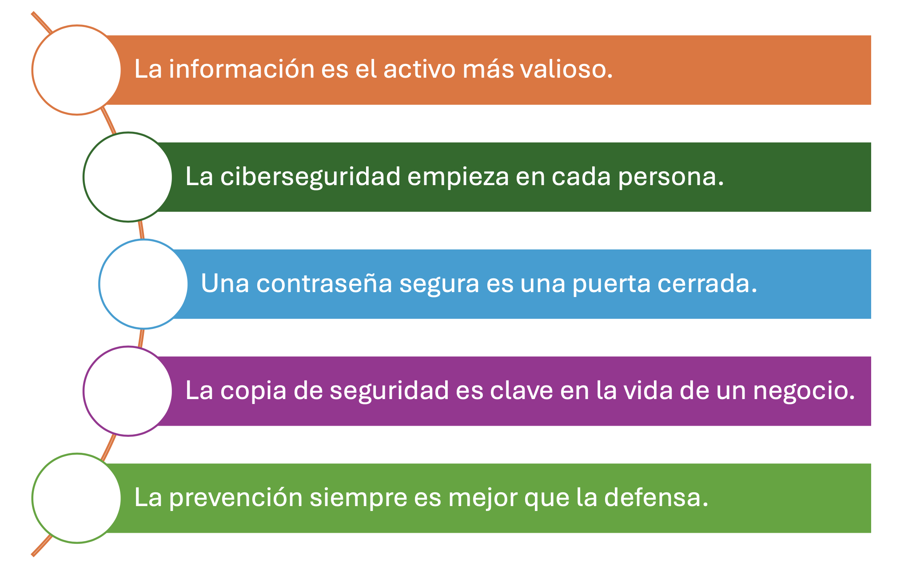